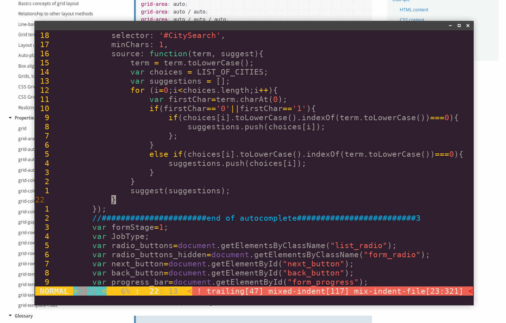

I first studied journalism then philosophy then droped out.
After this I worked as a graphics designer for a videography company, cameraman in a TV station and SEO expert in a company working on the US market.

And all this time I have been coding.
Upwork